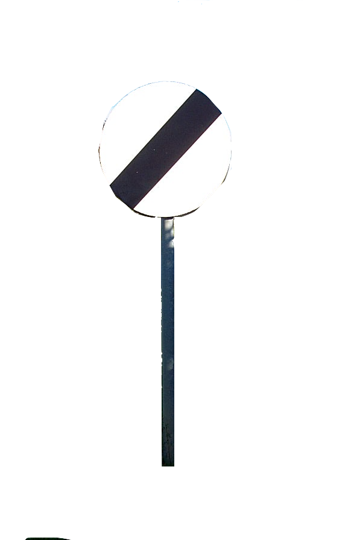
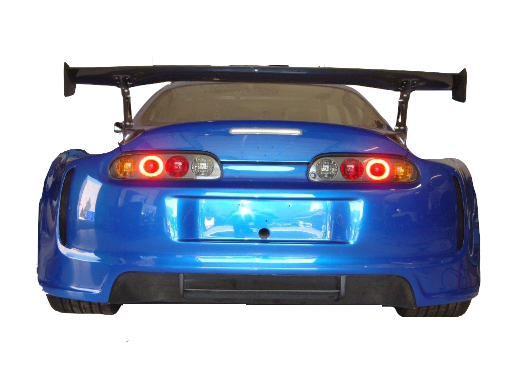
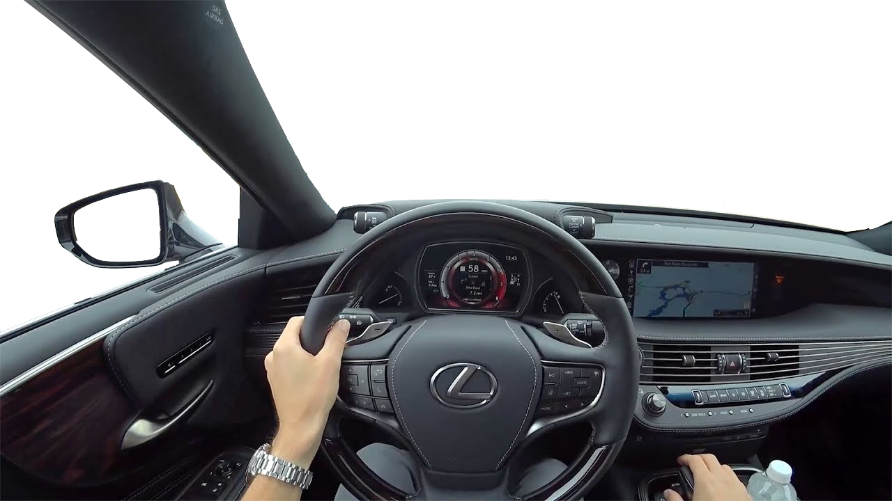

<!DOCTYPE html>
<html lang="en">
<head>
    <meta charset="UTF-8">
    <meta name="viewport" content="width=device-width, initial-scale=1.0">
    <meta http-equiv="X-UA-Compatible" content="ie=edge">
    <title>adam pearson portfolio</title>
</head>
<body>
    
</body>
</html>
    <link rel="stylesheet" type="text/css" href="./index.css"/>
    <link rel="stylesheet" href="https://use.fontawesome.com/releases/v5.7.2/css/all.css" integrity="sha384-fnmOCqbTlWIlj8LyTjo7mOUStjsKC4pOpQbqyi7RrhN7udi9RwhKkMHpvLbHG9Sr" crossorigin="anonymous">
    <link href="https://afeld.github.io/emoji-css/emoji.css" rel="stylesheet">
    <link href = "../Adam-everything/projects/dice_project/dicehtml/dice.html">

    
</head>
<body>

<div class = "navbar">

        <button class = "aboutme" onclick="function1()"> About Me: Page 2 </button>

        <div class = "sound"> <i class="fas fa-volume-down"> </i>
            <audio class = "supra" src = "./supra.mp3"></audio>
        </div>
        
        <button class = "projectss" onclick = "function2()"> Projects: Page 3 </button>
    <button class = "contact" onclick = "function3()"> Contact information: Page 4 </button>

</div>
<div class = "aboutmee">
<h1> Adam Pearson Portfolio </h1>
    <p> I am a very determined and dedicated person. I went from a 54 handicap to a 6 handicap in 5 years when I played golf, this was even through my growth spurts which seriously impacted my ability to play at the ages of 13/14, as a result of my loss of form through growing I was removed from the Yorkshire development squad, this was heartbreaking but I knew that if I stuck to it, practiced as much as possible and dedicated every spare minute I had to playing golf I would be able to become a Yorkshire player once again, just before I was diagnosed with my injury in 2016 my coach and I were planning on arranging to join the Yorkshire squad again. But I took the positive out of the whole situation as my 3 years of hard work was about to pay off.  </p>

    <a> I am very ambitious and motivated, I would always set targets before a competition and even if people told me I wouldn't hit them I would try even harder just to prove them wrong and prove to myself that I am a better player than I was the week before. I would also always set up imaginary scenarios when I was practicing just so that I felt pressure and always had to try my best. </a>    

    <d> I see myself as a very creative person and I usually think outside the box, whilst being logical. In golf I used to always baffle my oponents in matches by using strategies that they could not understand why I did them or how they worked, I got lots of feedback off coaches to cherish and utilise this way of thinking as it is what used to seperate me from my oponents. I also play as In Game Leader and Strategist in A game called CSGO, I am around the Semi-Professional level of this game and I use my creative mind to think of strategies in game that will win us the round or make the oponents next round harder. </d>  

 
    <e> I have come to codenation with no prior coding experience and not a lot of knowledge about coding at all. I just knew from the second that I heard about software development that I would love it as a job and a hobby. I love the idea of a job that constantly stimulates my brain and one that I can always improve on. Before the course I was constantly applying for software development apprenticeships in and around Leeds but I heard nothing back from any company in the 8 months I spent applying, this made my drive to learn coding exponentially increase. I found Codenation at the end of December and started on the 14th of January, I knew it was the best thing for me and I am enjoying it more than anything else. </e>  

    <c> I used to play Golf for York Union U18's first team, also my two clubs which were Garforth and Scarthingwell, I played off a 6 handicap but when I turned 16 I got an injury and haven't been able to play golf since, even after two years of physiotherapy. </c>
        
        <p2> As stated previously, I am around Semi-Professional level at CSGO, I have been in a few Semi-Professional teams and had great relationships with the people in the teams, the people I normally play with are from Austria, Sweden, Germany, Belgium and the UK. I love meeting new people to play with and building up friendships with these people. 
            I love BMXing, I normally do this through summer and go to skate parks with my friends to go and have fun, learn new tricks and have competitions. I also meet a lot of new people at these skate parks and it's great as we can also include these people in our competitions and arrange to go to skate parks with new people. 
            I am crazy about go-karting and go as much as I possibly can, I love the adrenaline and racing/competitive aspect, I am good at it too so it makes it more fun for me as I always have a go at beating track records as well as my opponents. 
            Sadly I had to quit golf, as I previously mentioned. I used to really enjoy going down to my local clubs and playing in competitions every saturday, meeting new people who were normally a lot older than me but I have always been quite mature and able to speak to people of all ages and get on really well with them. I also never used to get angry or frustrated if I played bad so this made a bit more enjoyable to play with. 
            I regularly spend sunny days working on my car and messing about with it with my best friend, this is really fun because I love learning everything about my car and get great enjoyment out of trying different ways around things to get them working. 
        </p2>
    </div>

    <div class = "projects">

        <h2> Projects </h2>

        <p3> These are my current projects that I have been working on at home and at CodeNation </p3>
        <button onclick = "open" class = "dice"> Dice Game </button>


    </div>

    <div class = "contact-me">

            <h3> Contact information </h3>

        <div class = "holder">
        <h4> <i class="em em-iphone"> </i> 07940 737 925 </h4>
        <h5> <i class="em em-email"></i> adampearson0502@gmail.com </h5>
    </div>

    </div>

    

<div class = "background"></div>
<div class = "sky"></div>
<div class = "grass"></div>
<div class = "overtaking"></div>
<div class = "road"></div>
<div class = "roadLine"></div>
<div class = "carriageline"></div>
<div class = "mirror"></div>

<div class = "cruise"></div>



        
    <div class = "road"></div>    

    <!-- <div class = "door"></div>
    <audio class = "open" src = "./cardoor.mp3"  onload="index.html" hidden></audio> -->


    
    


    <!-- <audio id = "supra.mp3" src = "../supra.mp3" type = "audio.mp3"></audio>
      
      <button type = "button" class = "supraP"> Play Audio </button>
      <button type = "button" class = "supraS"> Pause Audio </button>  -->
      <script type="text/javascript" src="./index.js"></script>

</body>
</html>